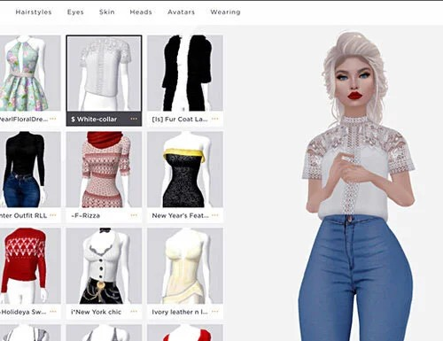

IMVU 对比评测：元宇宙社交圈里的"老资格"，到底值不值得入坑？
IMVU 作为 2004 年就上线的 3D 虚拟社交平台，在同类产品中有哪些差异化优势？从 3D 房间社交、经济系统到内容生态，横向对比后给你一个明确的选购结论。
同类产品里它排在什么位置
如果把虚拟社交产品按"从传统到前沿"拉一条线，从IMVU官网给出的定位来看大概卡在中间偏前的位置——它不是元宇宙概念爆火后才冒出来的新玩家，2004 年上线至今已经二十多年，靠 3D 头像 + 即时聊天这套核心玩法攒下了一批忠实用户。它的定位也一直很清晰：不是追求极致沉浸感的 VR 社交，也不是轻量化的文字/语音聊天室，而是一个"可以随时进去逛一圈、跟人打个招呼"的 3D 虚拟社区。
身边用过同类产品的朋友对它评价两极：有人觉得它"画风土、画质旧，跟最新的 VR 社交软件比起来像上个时代的产物"；也有人说"它就是好用，房间多、人活跃，想找人聊什么都能找到同好"。这两种说法都没错——IMVU 的取舍从一开始就不是"堆技术"，而是"堆内容"。下面拆开说它的差异化、它的代价，以及什么样的人该选它。
它的差异化：别人家没有的三个特点
第一，纯 3D 房间社交，不是换皮聊天室
多数同类产品要么是"2D 界面 + 虚拟形象头像"，要么是"VR 设备专用"，IMVU 是少有的能在普通手机或桌面浏览器里直接跑的 3D 房间。你进入的每个房间都是一个独立的 3D 场景——酒吧、沙滩、泳池、日式庭院，甚至还有用户自己搭的主题房间——你的分身会出现在场景里，可以走动、选座位、做动作，聊天气泡从头顶飘出来，同时还有一个文字面板方便快节奏交流。
这种形态带来的最大好处是"在场感"：你不是在跟一堆文字框聊天，而是真的"在"那个房间里。房间可以开音乐、配合动作互动，整体体验更接近可以走动的语音直播间，而不是传统的聊天室。平台上有超过 40 万个房间，从 GA 全年龄到 AP 成人向、VIP 专属都有，新用户一进来就能逛半天。
第二，完整的内购经济系统，积分不是摆设
IMVU 的积分系统比多数同类产品都要扎实。积分（Credits）不仅能买虚拟服装、家具、表情动作这些常规项，还能用来创建房间、升级 VIP 档位、甚至给其他用户送礼物。VIP 订阅分四档，每档给的积分返还、直播槽位、优先客服通道都不同，支持随时升降档（升级立即生效，降级下周期执行），自动续费可以在系统订阅设置里关掉，管理起来比想象中灵活。
礼品卡体系也是它的一个加分项——不想用信用卡的用户可以直接买实体或电子礼品卡，刮开涂层输入兑换码就行，兑换内容按卡片类型给积分或订阅。对有自控力的家长来说，用礼品卡定额给孩子充值，比直接关联支付账号安全得多。
第三，内容生态开放但有清晰边界
IMVU 的内容分级体系比很多同类产品都要明确。最低年龄 13 岁（App Store 美区分级 17+），13~17 岁的未成年账号有更严格的词过滤，成人向内容被隔离在 Access Pass 体系里，必须先通过 Yoti 的第三方年龄认证（拍证件照 + 自拍，或自拍估龄）才能解锁。认证不通过的连 AP 房间都进不去，拿到 AP 资格也不是内容无边界——骚扰和违规内容照样可以举报，真人审核团队每年处理超过 300 万份举报。
这套分级体系的好处是：社区氛围不会像完全无门槛的平台那样乱，同时又给成年人保留了内容自由度。想深入了解年龄认证流程和 Access Pass 细节的话，可以翻一下imvu文档的账号安全板块。对想认真交朋友的用户来说，这种"有边界的开放"反而比一刀切的全年龄平台更友好。

它的取舍：为这些优势付出了什么
上手门槛：画风老旧 + 操作有学习成本
这是最明显的代价。IMVU 的 3D 渲染引擎是早年的老技术，放到今天看画面质感确实偏粗糙——头像建模、场景细节、动作流畅度都比不过用 Unity 或 Unreal 做的新一代 VR 社交产品。而且房间里的操作（移动、选动作、切换表情）对新用户来说需要摸索一会儿，不像文字聊天室那样上来就能打字。
好在这不是硬伤：多数用户在 GA 房间里逛十分钟就能上手基本操作，真正影响体验的反而是"你能不能找到自己喜欢的房间"。
平台限制：没有 VR 原生支持
IMVU 一直没做 VR 原生适配——它的 3D 是为触屏和键鼠优化的，戴 VR 设备进去也只能当普通 3D 界面用，没有头部追踪和手势交互。对追求极致沉浸感的 VR 玩家来说这是个硬伤，但反过来说，它也因此不需要用户买昂贵的硬件，从官方下载后手机浏览器打开就能玩，覆盖面反而是最广的。
内容上的取舍：工具属性弱
IMVU 没打算做"人人都是创作者"的平台——房间创建需要有一定的场景搭建经验，虚拟物品的制作和上架门槛也不低，普通用户能做的主要是"消费"和"逛"。如果你想做自己的虚拟空间、搭自己的场景，它不如那些主打 UGC 创作的产品灵活。
选购结论：谁该选 IMVU，谁该看别的
选 IMVU 的人：你想找一个不需要 VR 设备、打开就能逛的 3D 虚拟社交空间；你喜欢"随便进个房间跟人聊两句"这种轻松感，而不是高强度的语音直播；你希望社区有边界、不会乱到没安全感；你不在意画风是否最前沿，更在意房间数量和用户活跃度。
不选 IMVU 的人：你是 VR 设备用户，想要沉浸式的头部追踪体验；你追求极致画质和现代化渲染；你想自己搭场景、做虚拟物品、当内容创作者；你对画风有强审美要求，接受不了"上一个时代"的视觉质感。
最后补一句：如果你身边有人在玩 IMVU，跟着他们进房间是最快的上手方式——朋友在哪，直接点进去就能一起逛。不然就从热门 GA 房间开始，先看再聊，很快就能摸到节奏。